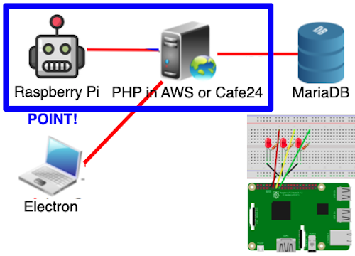

배경과 목적
요즘 유행하는 것 중 하나가 IoT입니다. 따라서 임베디드 개발자가 될 것에 대비해서 기초 소양를 키우기 위해 저만의 프로젝트를 하였습니다.
배운 점
RaspberryPi와 Electron에서 HTTP Request를 보내는 법과, GET과 POST의 차이를 알게 되었습니다.
RaspberryPi에서 LED를 장착한 후 활용하는 법을 알게 되었습니다.
Electron으로 클라이언트를 구현하는 법을 알게 되었습니다.
AWS와 Cafe24에서 서버를 구축한 후 운영하는 법을 알게 되었습니다.
상황에 따라 PHP에서 HTTP Response를 보내는 법을 알게 되었습니다.
PHP로 서버를 구축하는 법과 MariaDB로 데이터베이스를 구축해서 연동하는 법을 알게 되었습니다.
진행 절차
Electron로 클라이언트 구현하였습니다. 이때, HTTP Request를 보내도록 하였습니다.
PHP로 서버를 구축하였고, MariaDB로 데이터베이스를 구축한 다음 연동하였습니다.
AWS와 Cafe24에 서버를 띄웠습니다. 그러나 AWS에 띄울 때, 데이터베이스에 접근 조차 이루어지지 않는 오류가 발생했습니다. 그래서, MariaDB 유저를 새로 만든 후, 이 유저한테 모든 권한을 부여하였고 서버에서 사용하였습니다. 이렇게 해서 데이터베이스에 접근할 수 있도록 하였습니다.
이렇게 해서 원하는 프로그램을 구현할 수 있었습니다.
역량 강화를 위해 가장 노력한 점
RaspberryPi와 Electron에서 HTTP Request 전송 및 LED 장착 후 활용
전체 구조

사용 기술
RaspberryPi, Electron, PHP, AWS, Cafe24
개발 환경
Thonny, Visual Studio Code, FileZilla, TablePlus